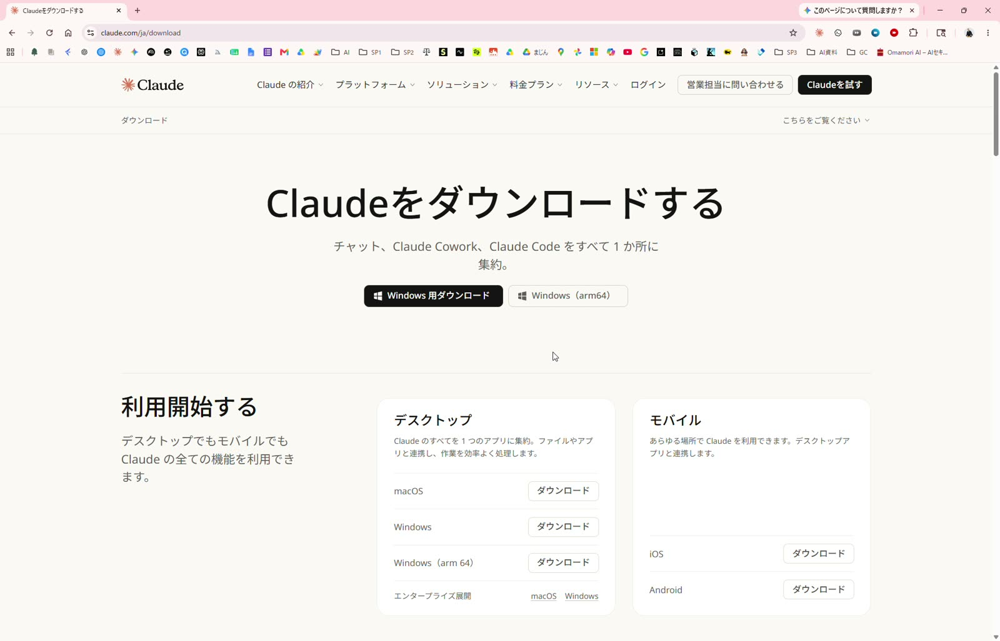
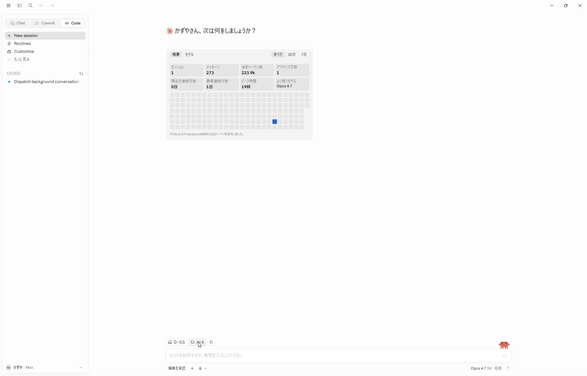
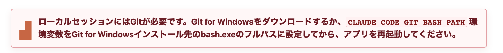
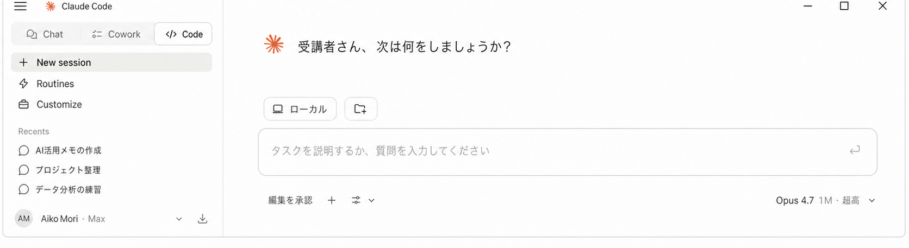
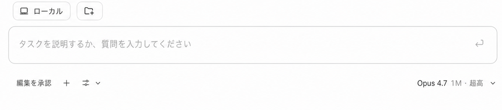
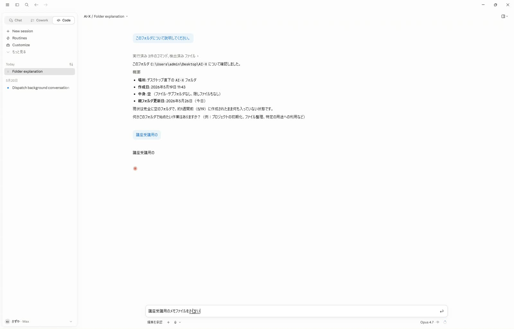

Free
Claudeを始める
$0
AI-X講座にお申し込みの皆様へ
講座前の最低ラインはCodexのダウンロードとセットアップです。時間に余裕がある方は、Claude Code側の準備として、ClaudeのProプランを月額で契約し、MacまたはWindowsにClaudeデスクトップアプリをインストールして、練習用の AI-X フォルダで動作確認まで進めます。
まだCodexの準備が終わっていない方は、先にCodexインストールガイドも確認してください。Windowsの場合は、Claude Codeやローカルファイル作業でGitが必要になる場合があります。Gitがすでに入っている方はそのまま進め、入っていない方はGitをインストールしたあと、Windowsを一度再起動してからClaudeを開き直してください。
Mac / Windows 共通
Claude Codeを講座で使うため、無料プランではなくClaude Proにしてから進めます。プラン画面では Pro を選び、請求は年間ではなく 月額 にしてください。
Claude公式ヘルプでも、Claude CodeはProまたはMaxプランのサブスクリプションで利用する流れが案内されています。
Claudeを始める
選ぶプラン
リサーチ、コーディング、整理
より高い制限、優先アクセス
表示金額や内容は変わる場合があります。画面ではProと月額請求を確認してください。
事前確認
ClaudeデスクトップアプリはMacとWindowsで利用できます。Claude公式ヘルプでは、MacはmacOS 11以上、WindowsはWindows 10以上が案内されています。
アプリのインストール後は、普段Claudeで使っているアカウントでサインインします。講座前に一度アプリを開き、簡単な依頼を送れるところまで確認してください。
Claudeデスクトップのダウンロードページを開き、「macOS用をダウンロード」を押します。

ダウンロードフォルダを開き、Claude.dmg が入っていることを確認します。見つかったら、そのファイルを開きます。

開いた画面でClaudeのアイコンをApplicationsフォルダへドラッグします。これでMacへのインストールは完了です。

Applicationsフォルダに入った Claude.app を開きます。初回はサインインが必要になる場合があります。

Claudeのログイン画面が開いたら、普段使うアカウントでログインします。Googleアカウントまたはメールアドレスで進めてください。

Claudeが開いたら、左側に会話やプロジェクト、中央に入力欄が表示されます。講座用の作業は、まず練習用フォルダで試します。

Finderでデスクトップを開き、新規フォルダを作成して、名前を AI-X にします。

Claudeの左上にある Chat / Cowork / Code の中から Code を選び、New session を開きます。
New session を開いたあと、チャット欄の上部にある「フォルダを追加するマーク」から作業フォルダを選ぶ画面を開きます。先ほど作った AI-X フォルダを選びます。最初は空のフォルダで大丈夫です。


フォルダを選んだら、下の文章を送ってみてください。
このフォルダについて説明してください。まだ何もなければ、空のフォルダだと教えてください。
Claudeがフォルダの中身を確認し、空のフォルダならその旨を返してくれます。ここまで動けば、アプリの基本動作は確認できています。

次に、講座用の簡単なメモを作ってもらいます。ここまで送れれば、講座前の練習は十分です。
講座受講用のメモファイルを作成しておいて
Windows
Windowsをご利用の方は、Windows版のClaudeをインストールし、必要に応じてGit for Windowsも確認します。
Claudeデスクトップのダウンロードページを開き、「Windows」を選びます。ARM版のPCを使っている方以外は、通常のWindows版で大丈夫です。

ダウンロードしたClaudeを開くとログイン画面が表示されます。普段Claudeで使っているGoogleアカウント、メールアドレス、会社アカウントなどでログインします。
サインインが終わったらClaudeアプリを開き、左側のメニューと下の入力欄が表示されることを確認します。

Claudeでローカル作業を始めたときに、このようなGitエラーが出る場合があります。表示された方だけ5へ進みます。何も出ていない方、すでにGitが入っている方は5を飛ばして6へ進んでください。

Gitの案内やエラーが出た方は、Git for Windows公式ページからインストーラーをダウンロードします。
必ず再起動: Gitを新しく入れた方は、Finishまで完了したあとWindowsを一度再起動してください。再起動後にClaudeを開き直します。

エクスプローラーでデスクトップを開き、右クリックから「新規作成」→「フォルダー」を選び、名前を AI-X にします。

Claudeの左上にある Chat / Cowork / Code の中から Code を選び、New session を開きます。チャット欄の上部にある「フォルダを追加するマーク」から AI-X フォルダを選び、次の2つを順番に試してください。
このフォルダについて説明してください。まだ何もなければ、空のフォルダだと教えてください。講座受講用のメモファイルを作成しておいて


うまくいかない時
設定変更が必要そうな場合は、無理に進めずスクリーンショットを保存して共有してください。
ブラウザ右上のダウンロード一覧、またはダウンロードフォルダを確認してください。見つからなければ、もう一度公式ページからダウンロードします。
ブラウザでClaudeにログインできるか確認し、Claudeアプリを一度終了して開き直してください。会社PCの場合は管理者設定が影響することがあります。
Gitが未インストールの場合はGit for Windowsを入れます。Finish後は必ずWindowsを再起動し、Claudeを開き直してください。
まず再起動します。それでも変わらない場合は、Claudeを終了してから開き直し、表示されたエラー画面を保存してください。
最初はデスクトップの AI-X フォルダだけを選びます。顧客情報や社外秘資料が入ったフォルダは、講座前の練習では使わないでください。
Claudeは表示が更新されることがあります。ダウンロード、起動、サインイン、フォルダ確認の順番が合っていれば問題ありません。
最後に確認
Codexの準備が終わったうえで、Claude Codeも使える状態になっているか確認します。
講座前に共有するもの
止まった場合は、エラー画面のスクリーンショットを撮って保存してください。
注意
初回練習では、実際の顧客情報・個人情報・社外秘資料は使わないでください。まずは練習用フォルダやダミー資料で動作確認をしてください。
事前準備が終わったら
Codeタブ、Local、AI-Xフォルダ、権限モード、Computer useなど、最初に迷いやすい設定を別ページにまとめています。